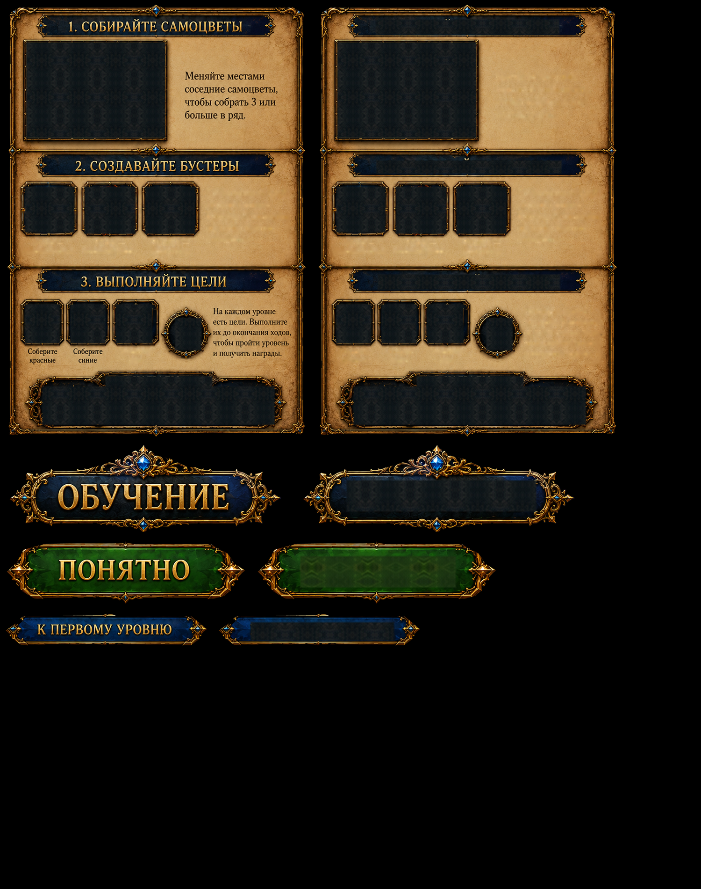

Whole parchment panel, separate original title and buttons. RU preserves correct source lettering; EN uses native localized text. Gameplay gems are referenced directly, not re-extracted. Background choices below expose alpha edges; these are asset inspection sheets, not Unity screenshots.
